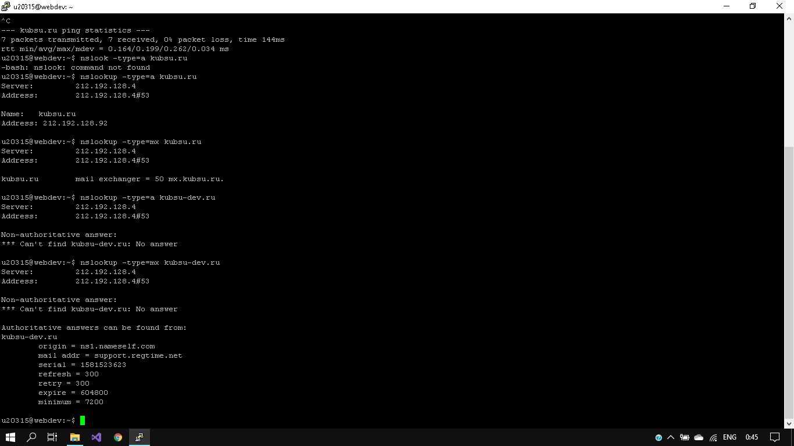
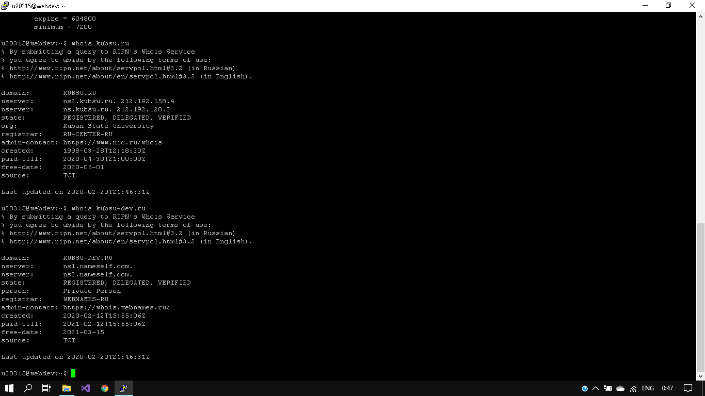
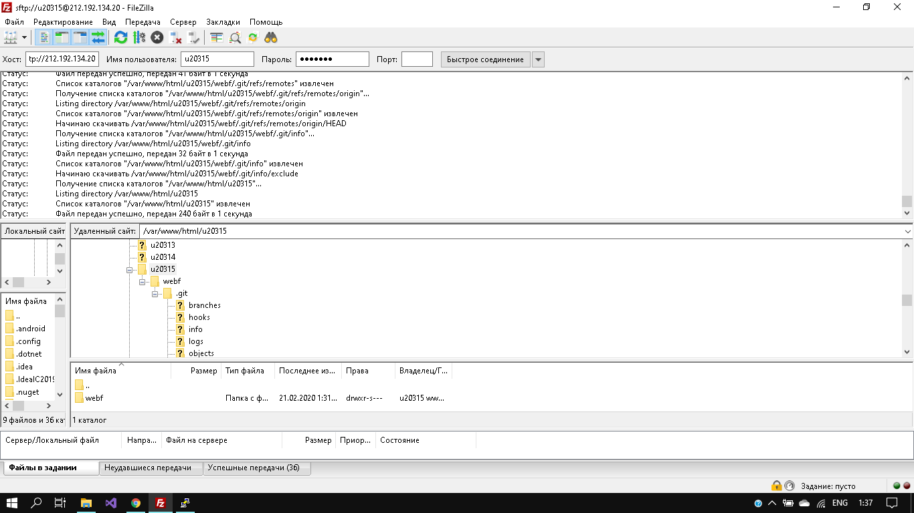

1)команда ping и IP-адрес

2)команда nslookup- узнать A-записи и MX-записи домена kubsu.ru и kubsu-dev.ru
3)команда whois- узнать дату регистрации домена kubsu.ru и kubsudev.ru
4)С помощью программы FileZilla или любого другого клиента FTP соединиться с учебным сервером с вашим логином и паролем по протоколу FTP и скопировать на локальный компьютер файлы задания из каталога /var/www/html/ваш_логин/.
